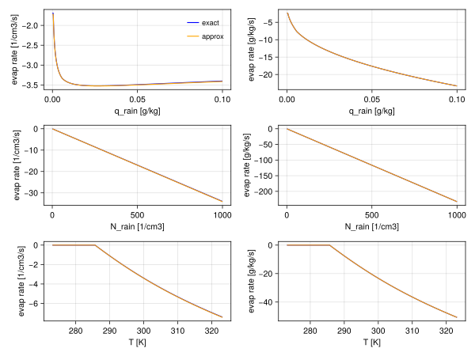
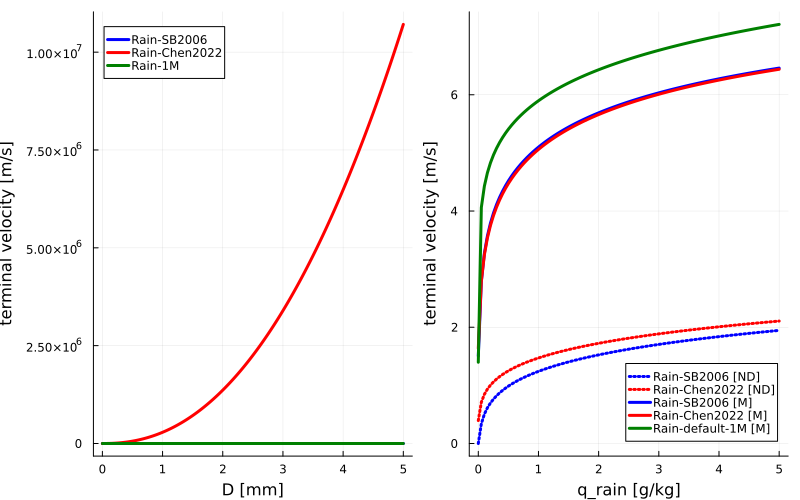
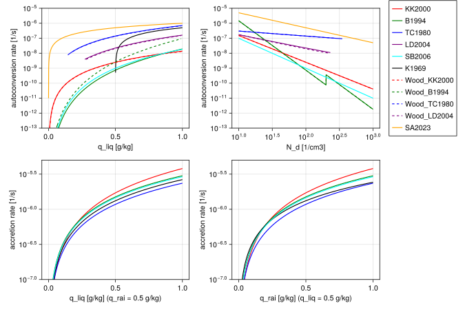

Microphysics 2M
The Microphysics2M.jl module provides 2-moment warm rain bulk parameterization of cloud microphysical processes including autoconversion, accretion, cloud droplets and raindrops self-collection, raindrops breakup, mean terminal velocity and rain evaporation. Autoconversion defines the rate of transfer from cloud liquid water to rain water due to collisions between cloud droplets. Accretion defines the rate of transfer from cloud liquid water to rain water due to collisions between cloud droplets and rain drops. Cloud self-collection defines the rate of change of cloud droplets number density due to collisions between cloud droplets, and similarly, rain self-collection defines the rate of change of raindrops number density due to collsions between raindrops. Rain drops breakup defines the rate of new raindrops production due to the disintegration of larger raindrops. Mean terminal velocity represents the mean fall speed of raindrops, and rain evaporation describes the rate of the transformation of rainwater to water vapor. Specifically, Microphysics2M.jl implements:
- the double-moment [13] parametrization, which includes autoconversion, accretion, cloud and rain self-collection rates, breakup, terminal velocity and evaporation;
- and other double-moment autoconversion and accretions schemes from [15] based on the works of [18], [19], [20] and [21].
The microphysics variables are expressed as specific humidities [kg/kg] and number densities [1/m^3]:
q_liq- cloud water specific humidity,q_rai- rain specific humidity,N_liq- cloud droplets number density,N_rai- raindrops number density.
The default values of free parameters are defined in ClimaParams and can be overwritten using the toml files.
The Seifert and Beheng (2006) parametrization
The [13] parametrization provides process rates for autoconversion, accretion, self-collection of cloud droplets and raindrops, raindrops breakup, raindrops mean fall speed, and rain evaporation. This parametrization is directly derived from the stochastic collection equation (SCE) with a piecewise polynomial collsion kernel and assumming a gamma size distribution for cloud droplets and an exponential size distribution for raindrops.
The piece-wise polynomial collection Kernel, used for the derivation of the parametrization, is given by:
\[\begin{align} K(x,y) = \begin{cases} k_{cc}(x^2+y^2), \quad & x\wedge y < x^*\\ k_{cr}(x+y), \quad & x\oplus y \geq x^*,\\ k_{rr}(x+y)\exp[-\kappa_{rr} (x^{1/3} + y^{1/3})], \quad & x\wedge y \geq x^*, \end{cases} \end{align}\]
where $x$ and $y$ are drop masses and $x^*$ is the mass threshold chosen to separate the cloud and rain portions of the mass distribution. For $K$ in $m^3 s^{-1}$ the constants are
| symbol | default value |
|---|---|
| $k_{cc}$ | $4.44 \times 10^9 \, m^3 \cdot kg^2 \cdot s^{-1}$ |
| $k_{cr}$ | $5.25 \, m^3 \cdot kg \cdot s^{-1}$ |
| $k_{rr}$ | $7.12 \, m^3 \cdot kg \cdot s^{-1}$ |
| $\kappa_{rr}$ | $60.7 \, m^3 \cdot kg \cdot s^{-1}$ |
| $x^*$ | $2.6 \times 10^{-10} \, kg$ |
The default value of $x^*=2.6\times 10^{-10} kg$ corresponds to the drop radius $r^* \approx 40 \mu m$.
The cloud droplets Gamma distribution function is described by
\[\begin{align} f_c(x)=Ax^\nu e^{-Bx},\quad \nu=\text{const}, \end{align}\]
and the raindrops exponential distribution is expressed as
\[\begin{align} f_r(D)=\alpha e^{-\beta D}, \end{align}\]
where $D$ is the drop diameter which is proportional to $x^{1/3}$.
In the derivation of the parametrization, it is assumed that the cloud droplet distribution $f_c(x)$ does not contain a significant number of droplets with masses almost equal or larger than $x^*$. This is reffered to as the undeveloped cloud droplet spectrum assumption. Similarly the raindrop distribution does not contain a significant number of rain drops with masses almost equal or smaller than $x^*$. These assumptions allow us to simplify the calculation of moments of the distributions by integrating from zero to infinity.
Autoconversion
The autoconversion rate can be estimated by looking at variations in the second moment of the particle mass spectrum. Specifically, the sum of variations in the second moment of the cloud droplets and raindrops spectrum equals the variations in the second moment of the particle mass spectrum:
\[\begin{align} \frac{\partial Z}{\partial t} = \frac{\partial Z_c}{\partial t} + \frac{\partial Z_r}{\partial t}, \end{align}\]
where $Z$ represents the second moment, and $c$ and $r$ subscripts denote cloud and rain categories respectively. In the early stages of rain evolution, an estimate of the variations in the second moment of the particle mass spectrum is obtained from the stochastic collection equation: $\partial Z / \partial t \approx 2k_c L_c M_c^{(3)}$, where $M_c^{(3)}$ is the third moment of the cloud droplets spectrum. Using these equations, along with computing $Z_c$, $M_c^{(3)}$, $Z_r$ directly by integrating the distribution functions, allows us to derive an equation for the autoconversion rate. To simplify the derivation, we assume that in the initial stage of the rain evolution raindrops have sizes of the order of $x^*$ and the mean radius of cloud droplets is much less than $x^*$. This approach yields an approximation of the autoconversion rate in the early stages of rain evolution. The early stage rain evolution assumption is then relaxed by means of a universal function that depends on a process time scale.
The rate of change of rain specific humidity by autoconversion is finally expressed as
\[\begin{equation} \left. \frac{\partial q_{rai}}{\partial t} \right|_{acnv} = \frac{k_{cc}}{20 \; x^* \; \rho} \frac{(\nu+2)(\nu+4)}{(\nu+1)^2} (q_{liq} \rho)^2 \overline{x}_c^2 \left(1+\frac{\phi_{acnv}(\tau)}{1-\tau^2}\right)\frac{\rho_0}{\rho}, \end{equation}\]
where:
- $q_{liq}$ is the cloud liquid water specific humidity,
- $\rho$ is the moist air density,
- $\rho_0 = 1.225 \, kg \cdot m^{-3}$ is the air density at surface conditions,
- $k_{cc}$ is the cloud-cloud collection kernel constant,
- $\nu$ is the cloud droplet gamma distribution parameter,
- $x^*$ is the drop mass separating the cloud and rain categories
- $\overline{x}_c = (q_{liq} \rho) / N_{liq}$ is the cloud droplet mean mass with $N_{liq}$ denoting the cloud droplet number density. Here, to ensure numerical stability, we limit $\overline{x}_c$ by the upper bound of $x^*$.
The function $\phi_{acnv}(\tau)$ is used to correct the autoconversion rate for the undeveloped cloud droplet spectrum and the early stage rain evolution assumptions. This is a universal function which is obtained by fitting to numerical results of the SCE:
\[\begin{equation} \phi_{acnv}(\tau) = A \tau^b(1-\tau^b)^c, \end{equation}\]
where
- $\tau = 1 - q_{liq}/(q_{liq} + q_{rai})$ is a dimensionless internal time scale with $q_{rai}$ being the cloud liquid water specific humidity.
The default free parameter values are:
| symbol | default value |
|---|---|
| $\nu$ | $2$ |
| $A$ | $400$ |
| $a$ | $0.7$ |
| $c$ | $3$ |
The rate of change of raindrops number density is
\[\begin{equation} \left. \frac{\partial N_{rai}}{\partial t} \right|_{acnv} = \frac{\rho}{x^*} \left. \frac{d \, q_{rai}}{dt} \right|_{acnv}, \end{equation}\]
and the rate of change of liquid water specific humidity and cloud droplets number density are
\[\begin{align} \left. \frac{\partial q_{liq}}{\partial t} \right|_{acnv} = - \left. \frac{\partial q_{rai}}{\partial t} \right|_{acnv},\\ \left. \frac{\partial N_{liq}}{\partial t} \right|_{acnv} = -2 \left. \frac{\partial N_{rai}}{\partial t} \right|_{acnv}. \end{align}\]
The Seifert and Beheng parametrization is formulated for the rate of change of liquid water content $L = \rho q$. Here, we assume constant $\rho$ and divide the rates by $\rho$ to derive the equations for the rate of change of specific humidities.
Accretion
An approximation for the accretion rate is obtained by directly evaluating the integral:
\[\begin{align} \left. \frac{\partial q_{rai}}{\partial t} \right|_{accr} = \frac{1}{\rho} \int_{x=0}^\infty\int_{y=0}^\infty f_c(x) f_r(y) K(x,y) x dy dx. \end{align}\]
Similar to the autoconversion rate, the accretion rate is modified by a universal function. Thus, the rate of change of rain specific humidity by accretion becomes
\[\begin{align} \left. \frac{\partial q_{rai}}{\partial t} \right|_{accr} = & \frac{k_{cr}}{\rho} (q_{liq} \rho) (q_{rai} \rho) \phi_{accr}(\tau),\nonumber\\ = & k_r \rho q_{liq} q_{rai} \phi_{accr}(\tau) \left(\frac{\rho_0}{\rho}\right)^{1/2}, \end{align}\]
where:
- $q_{liq}$ is the cloud liquid water specific humidity,
- $q_{rai}$ is the rain liquid water specific humidity,
- $\rho$ is the moist air density,
- $\rho_0$ is the air density at surface conditions,
- $k_{cr}$ is the cloud-rain collection kernel constant.
The universal function $\phi_{accr}(\tau)$ is used to correct the accretion rate for the assumption of collsion efficiency being one. Fitting to numerical solutions of the SCE obtains:
\[\begin{equation} \phi_{accr}(\tau) = \left(\frac{\tau}{\tau+\tau_0}\right)^c, \end{equation}\]
where
- $\tau = 1 - q_{liq}/(q_{liq} + q_{rai})$ is a dimensionless internal time scale.
The default free parameter values are:
| symbol | default value |
|---|---|
| $\tau_0$ | $5 \times 10^{-5}$ |
| $c$ | $4$ |
The rate of change of raindrops number density by accretion is zero, and the rate of change of liquid water specific humidity and cloud droplets number density are
\[\begin{align} \left. \frac{\partial q_{liq}}{dt} \right|_{accr} = - \left. \frac{\partial q_{rai}}{dt} \right|_{accr},\\ \left. \frac{\partial N_{liq}}{dt} \right|_{accr} = \frac{\rho}{\overline{x}_c} \left. \frac{\partial q_{liq}}{dt} \right|_{accr}, \end{align}\]
where $\overline{x}_c = (q_{liq} \rho) / N_{liq}$ is the cloud droplet mean mass.
Cloud droplets self-collection
An approximation for the self-collection rate of cloud droplets is obtained by the following equation:
\[\begin{align} \left. \frac{\partial N_{liq}}{\partial t} \right|_{sc} = & \left. \frac{\partial N_{liq}}{\partial t} \right|_{acnv,\ sc} - \left. \frac{\partial q_{rai}}{\partial t} \right|_{acnv},\nonumber\\ = & -\frac{1}{2}\int_{x=0}^{\infty}\int_{y=0}^{\infty} f_c(x) f_c(y) K(x,y) dy dx - \left. \frac{d \, q_{rai}}{dt} \right|_{acnv}. \end{align}\]
Direct evaluation of the integral results in the following approximation of the rate of change of cloud droplets number density due to self-collection
\[\begin{equation} \left. \frac{\partial N_{liq}}{\partial t} \right|_{sc} = -k_{cc} \frac{\nu + 2}{\nu + 1} \frac{\rho_0}{\rho} (q_{liq} \rho)^2 - \left. \frac{\partial N_{liq}}{\partial t} \right|_{acnv}, \end{equation}\]
where:
- $q_{liq}$ is the cloud liquid water specific humidity,
- $\rho$ is the moist air density,
- $\rho_0$ is the air density at surface conditions,
- $k_{cc}$ is the Long's collection kernel constant,
- $\nu$ is the cloud droplet gamma distribution parameter,
- $\left. \frac{d \, N_{liq}}{dt} \right|_{acnv}$ is the rate of change of cloud droplets number density by autoconversion.
Raindrops self-collection
An approximation for rate of change of raindrops number density due to self-collection is obtained by directly evaluating the integral:
\[\begin{align} \left. \frac{\partial N_{rai}}{\partial t} \right|_{sc}= -\frac{1}{2}\int_{x=0}^{\infty}\int_{y=0}^\infty f_r(x) f_r(y) K(x,y) dy dx. \end{align}\]
This yields,
\[\begin{equation} \left. \frac{\partial N_{rai}}{\partial t} \right|_{sc} = -k_{rr} N_{rai} (q_{rai} \rho) \left(1+\frac{\kappa_{rr}}{\lambda_r} \right)^d \left(\frac{\rho_0}{\rho}\right)^{1/2}, \end{equation}\]
where:
- $q_{rai}$ is the rain water specific humidity,
- $\rho$ is the moist air density,
- $\rho_0$ is the air density at surface conditions,
- $N_{rai}$ is the raindrops number density,
- $k_{rr}$ and $\kappa_{rr}$ are the rain-rain collection kernel constants.
- $\lambda_r$ is the raindrops size distribution parameter (based on drop mass): $\lambda_r = \left(\frac{6}{\overline{x}_r}\right)^{1/3}$.
The default constant value is:
| symbol | default value |
|---|---|
| $d$ | $-5$ |
In the paper $d=-9$ which seems to be a mistake! Evaluating the integral for derving the self-collection rate results in $d=-5$.
For the same numerical instabilities which in the paper are mentioned for terminal velocity and evaporation, here for rain self-collection, the value of $\lambda_r$ is bounded within a range. In fact we first compute the bounded $\lambda_r$ based on drop diameter by the algorithm given in the paper and then convert it to $\lambda_r$ based on mass (the conversion can be done by multiplying to a constant value).
Raindrops breakup
Raindrops breakup is modeled by assuming that in a precipitation event coalescence and breakup ultimately reach an equilibrium with a self-similar equilibrium size distribution. As a result, the breakup process can be coupled to raindrops self-collection by the following parameterization
\[\begin{equation} \left. \frac{\partial N_{rai}}{\partial t} \right|_{br} = -[\Phi_{br}(\Delta \overline{D}_r) + 1] \left. \frac{\partial N_{rai}}{\partial t} \right|_{sc}, \end{equation}\]
where $\Delta \overline{D}_r = \overline{D}_r - \overline{D}_{eq}$ with $\overline{D}_r$ denoting the mean volume raindrop diameter and $\overline{D}_{eq}$ being the equilibrium mean diameter. The function $\Phi_{br}(\Delta \overline{D}_r)$ is given by
\[ \begin{align} \Phi_{br}(\Delta \overline{D}_r) = \begin{cases} -1, \quad & \overline{D}_r < \overline{D}_{threshold},\\ k_{br} \Delta \overline{D}_r, \quad & \overline{D}_{threshold} < \overline{D}_r < \overline{D}_{eq},\\ 2 (exp(\kappa_{br} \Delta \overline{D}_r) -1), \quad & \overline{D}_{eq} < \overline{D}_r. \end{cases} \end{align}\]
The default free parameter values are:
| symbol | default value |
|---|---|
| $k_{br}$ | $1000 \, m^{-1}$ |
| $\kappa_{br}$ | $2300 \, m^{-1}$ |
| $\overline{D}_{threshold}$ | $0.35 \times 10^{-3} \, m$ |
| $\overline{D}_{eq}$ | $0.9 \times 10^{-3} \, m$ |
In the paper for $\overline{D}_{eq} < \overline{D}_r$ the equation $\Phi_{br}(\Delta \overline{D}_r) = 2 exp(\kappa_{br} \Delta \overline{D}_r) -1$ is given. This equations seems to be missing parentheses as the equation must be continuous at $\Delta \overline{D}_r = 0$ as shown in Fig. 2 of the paper.
Terminal velocity
For the two moment scheme which is based on number density and mass, it is straightforward to model sedimentation of particles by using number- and mass-weighted mean terminal velocities. For rain water these terminal velocities are obtained by calculating the following integral:
\[\begin{equation} \overline{v}_{r,\, k} = \frac{1}{M_r^k} \int_0^\infty x^k f_r(x) v(x) dx, \end{equation}\]
where the superscript $k$ indicates the moment number, $k=0$ for number density and $k=1$ for mass. The individual terminal velocity of particles is approximated by
\[v(x) = \left(\rho_0/\rho\right)^{\frac{1}{2}} [a_R - b_R exp(-c_R D_r)]\]
where $a_R$, $b_R$ and $c_R$ are three free parameters and $D_r$ is the particle diameter. Evaluating the integral results in the following equation for terminal velocity:
\[\begin{equation} \overline{v}_{r,\, k} = \left(\frac{\rho_0}{\rho}\right)^{\frac{1}{2}}\left[a_R - b_R \left(1+\frac{c_R}{\lambda_r}\right)^{-(3k+1)}\right], \end{equation}\]
where $\lambda_r$ is the raindrops size distribution parameter (based on diameter): $\lambda_r = (\phi \rho_w/\overline{x}_r)^{1/3}$. To avoid numerical instabilities, especially when $N_{rai} \rightarrow 0$ and $q_{rai} \rightarrow 0$, $\lambda_r$ is bounded. The limiting algorithm is as follows:
\[\begin{align} \widetilde{x}_r &= max \left(\overline{x}_{r,\, min} , min \left(\overline{x}_{r,\, max} , \frac{\rho q_{rai}}{N_{rai}}\right)\right),\\ N_0 &= max \left(N_{0,\, min} , min \left(N_{0,\, max} , N_{rai}\left(\frac{\pi \rho_w}{\widetilde{x}_r}\right)^{\frac{1}{3}}\right)\right),\\ \lambda_r &= max \left(\lambda_{min} , min \left(\lambda_{max} , \left(\frac{\pi \rho_w N_0}{\rho q_{rai}}\right)^{\frac{1}{4}}\right)\right). \end{align}\]
The default free parameter values are:
| symbol | default value |
|---|---|
| $a_R$ | $9.65 \, m \cdot s^{-1}$ |
| $b_R$ | $10.3 \, m \cdot s^{-1}$ |
| $c_R$ | $600 \, m^{-1}$ |
| $\overline{x}_{r,\, min}$ | $2.6 \times 10^{-10} \, m$ |
| $\overline{x}_{r,\, max}$ | $5 \times 10^{-6} \, m$ |
| $N_{0,\, min}$ | $2.5 \times 10^{5} \, m^{-4}$ |
| $N_{0,\, max}$ | $2 \times 10^{7} \, m^{-4}$ |
| $\lambda_{min}$ | $1 \times 10^{3} \, m^{-1}$ |
| $\lambda_{max}$ | $1 \times 10^{4} \, m^{-1}$ |
Rain evaporation
The parametrization of rain evaporation is obtained by considering the time scale of evaporation of individual raindrops:
\[\begin{equation} \tau_{eva} = \frac{x_r}{\frac{dx_r}{dt}\bigg|_{eva}} = \frac{x_r}{2 \pi G_{lv}(T, p) S D_r(x_r) F_v(x_r)}, \end{equation}\]
where
\[\begin{equation} G_{lv}(T, p) = \left[\frac{R_v T}{p_{lv}(T) D_v} + \frac{L_{lv}}{K_T T} \left(\frac{L_{lv}}{R_v T}-1\right)\right]^{-1} \end{equation}\]
with temperature $T$, thermal conductivity $K_T$, diffucivity of water vapor $D_v$, specific gas constant for water vapor $R_v$, latent heat of evaporation $L_{lv}$ and liquid-vapor saturation pressure $p_{lv}$. The ventilation factor is given by $F_v(x_r) = a_v + b_v N_{Sc}^{1/3} N_{Re}(x_r)^{1/2}$ where $N_{Sc} = \nu_{air} / D_v$ is the Schmidt number and $N_{Re}(x_r) = \frac{v_r (x_r) D_r (x_r)}{\nu_{air}}$ is the Reynolds number with kinematic viscosity of air $\nu_{air}$. The average evaporation rates are obtained from the following integral:
\[\begin{equation} \frac{\partial M_r^k}{\partial t}\bigg|_{eva} = \int_0^\infty \frac{x^k f_r(x)}{\tau_{eva}} dx = 2 \pi G_{lv}(T, p) S \int_0^\infty D_r(x) F_v(x) f_r(x) x^{k-1} dx. \end{equation}\]
where the superscript $k$ indicates the moment number, $k=0$ for number-weighted and $k=1$ for mass-weighted average. Here in the computation of the evaporation rate, a power-law fall speed is assumed: $v_r(x) \cong \alpha_r x^{\beta_r} \left(\frac{\rho_0}{\rho}\right)^{\frac{1}{2}}$. Evaluating the integral results in:
\[\begin{equation} \frac{\partial M_r^k}{\partial t}\bigg|_{eva} = 2 \pi G_{lv}(T, p) S N_{rai} D_r(\overline{x}_r) \overline{F}_{v,\, k}(\overline{x}_r) \overline{x}_r^{k-1}, \end{equation}\]
where $\overline{F}_{v,\, k}$ is an average ventilation factor for the $k$-th moment:
\[\begin{equation} \overline{F}_{v,\, k}(\overline{x}_r) = a_{vent,\, k} + b_{vent,\, k} N_{Sc}^{1/3} N_{Re}(\overline{x}_r)^{1/2}, \end{equation}\]
with
\[\begin{align} a_{vent,\, k} &= a_v 6^{2/3-k} \Gamma(3k-1),\\ b_{vent,\, k} &= b_v 6^{1/2-\beta_r/2-k} \Gamma(3k-1/2+3\beta_r/2). \end{align}\]
For $k = 0$ the integral for computing the mean evaporation rate does not converge. In this case it is reasonable to change the lower bound of the integral to $x=x^*$. The results remain the same except that the Gamma functions in the equations for $a_{vent,\, 0}$ and $b_{vent,\, 0}$, which are $\Gamma(-1)$ and $\Gamma(-1/2+3\beta_r/2)$, are replaced by the upper incomplete gamma function $\Gamma(-1, (6 x^* / \overline{x}_r)^{1/3})$ and $\Gamma(-1/2+3\beta_r/2, (6 x^* / \overline{x}_r)^{1/3})$, respectively. This issue and the suggested workaround are not mentioned in the paper.
The two-moment parametrization of evaporation suffers from the similar numerical instability issues as the sedimentation scheme. Thus, the same limiting algorithm as the sedimentation scheme is applied here to bound size distribution parameters. These limited parameters are then used to compute the mean raindrop mass by the following equation:
\[\begin{equation} \overline{x}_r = max \left(\overline{x}_{r,\, min} , min \left(\overline{x}_{r,\, max} , \frac{\rho q_{rai} \lambda_r}{N_0}\right)\right). \end{equation}\]
This mean mass is used for computing the evaporation rate.
The default free parameter values are:
| symbol | default value |
|---|---|
| $a_v$ | $0.78$ |
| $b_v$ | $0.308$ |
| $\alpha_r$ | $159 \, m \cdot s^{-1} \cdot kg^{-\beta_r}$ |
| $\alpha_r$ | $0.266$ |
In our implementation we approximate the incomplete gamma function in order to get good performance on the GPU. Below we show the evaporation rates for the number concnetration and mass using both the exact and approximated gamma function
include("plots/RainEvapoartionSB2006.jl")CairoMakie.Screen{SVG}

Additional 2-moment microphysics options
Terminal Velocity
[4] provides a terminal velocity parameterisation based on an empirical fit to a high accuracy model. It consideres the deformation effects of large rain drops, as well as size-specific air density dependence. The fall speed of individual raindrops $v(D)$ is parameterized as:
\[\begin{equation} v(D) = (\phi)^{\kappa} \Sigma_{i = 1,3} \; a_i D^{b_i} e^{-c_i*D} \end{equation}\]
where D is the diameter of the particle, $a_i$, $b_i$, and $c_i$ are free parameers that account for deformation at larger sizes and air density dependance, $\phi$ is the aspect ratio (assumed to be 1 for spherical droplets), and $\kappa$ is 0 (corresponding to a spherical raindrop). $a_i$, $b_i$, and $c_i$ are listed in the table below. The formula is applicable when $D > 0.1 mm$, $q$ refers to $q = e^{0.115231 * \rho_a}$, where $\rho_a$ refers to air density. The units are: [v] = m/s, [D]=mm, [$a_i$] = $mm^{-b_i} m/s$, [$b_i$] is dimensionless, [$c_i$] = 1/mm.
| $i$ | $a_i$ | $b_i$ | $c_i$ |
|---|---|---|---|
| 1 | $ 0.044612 \; q$ | $2.2955 \; -0.038465 \; \rho_a$ | $0$ |
| 2 | $-0.263166 \; q$ | $2.2955 \; -0.038465 \; \rho_a$ | $0.184325$ |
| 3 | $4.7178 \; q \; (\rho_a)^{-0.47335}$ | $1.1451 \; -0.038465 \; \rho_a$ | $0.184325$ |
Assuming the same size distribution as in [13], the number- and mass-weighted mean terminal velocities are:
\[\begin{equation} \overline{v_k} = \frac{\int_0^\infty v(D) \, D^k \, n(D) \, dD} {\int_0^\infty D^k \, n(D) \, dD} = (\phi)^{\kappa} \Sigma_{i} \frac{a_i \lambda^\delta \Gamma(b_i + \delta)} {(\lambda + c_i)^{b_i + \delta} \; \Gamma(\delta)} \end{equation}\]
where $\Gamma$ is the gamma function, $\delta = k + 1$, and $\lambda$ is the size distribution parameter. $\overline{v_k}$ corresponds to the number-weighted mean terminal velocity when k = 0, and mass-weighted mean terminal velocity when k = 3.
Below, we compare the individual terminal velocity formulas for [4] and [13]. We also compare bulk number weighted [ND] and mass weighted [MD] terminal velocities for both formulas integrated over the size distribution from [13]. We also show the mass weighted terminal velocity from the 1-moment scheme.
include("plots/TerminalVelocityComparisons.jl")"/home/runner/work/CloudMicrophysics.jl/CloudMicrophysics.jl/docs/build/1M_individual_terminal_velocity_comparisons.svg"
Accretion and Autoconversion
The other autoconversion and accretion rates in the Microphysics2M.jl module are implemented after Table 1 from [15] and are based on the works of [18], [19], [20] and [21] respectively. From the above works: (i) the [18] parameterisation is based on a fit to drop spectrum resolving scheme and designed to work for stratocumulus topped boundary layers, (ii) the [19] parameterisation is based on a fit to stochastic collection equation, (iii) the [20] parameterisation is developed for a deep convective case, and (iv) the [21] parameterisation is derived to include the effects of relative dispersion of the cloud droplet size distribution on precipitation formation rates and assumes a modified gamma distribution.
Autoconversion
Khairoutdinov and Kogan (2000)
\[\begin{equation} \left. \frac{d \, q_{rai}}{dt} \right|_{acnv} = A \; q_{liq}^a \; N_d^b \; \rho^c \end{equation}\]
where:
- $q_{liq}$ is the cloud liquid water specific humidity,
- $N_d$ is the cloud droplet concentration,
- $\rho$ is the air density,
and the default free parameter values are:
| symbol | default value |
|---|---|
| $A$ | $7.42 \times 10^{13}$ |
| $a$ | $2.47$ |
| $b$ | $-1.79$ |
| $c$ | $-1.47$ |
Beheng (1994)
\[\begin{equation} \left. \frac{d \, q_{rai}}{dt} \right|_{acnv} = \frac{C \; d^a \; (q_{liq} \rho)^b \; N_d^c}{\rho} \end{equation}\]
where:
- $q_{liq}$ is the cloud liquid water specific humidity,
- $N_d$ is the cloud droplet number concentration,
and the default free parameter values are:
| symbol | default value |
|---|---|
| $C$ | $3 \times 10^{34}$ |
| $a$ | $-1.7$ |
| $b$ | $4.7$ |
| $c$ | $-3.3$ |
| $d$ | $9.9$ for $N_d < 200 cm^{-3}$, $3.9$ for $N_d > 200 cm ^{-3}$ |
Tripoli and Cotton (1980)
\[\begin{equation} \left. \frac{d \, q_{rai}}{dt} \right|_{acnv} = D \; q_{liq}^a \; N_d^b \; \mathrm{H}(q_{liq} - q_{liq\_threshold}) \end{equation}\]
where:
- $q_{liq}$ is the cloud liquid water specific humidity,
- $q_{liq_threshold}$ is the cloud liquid to rain water threshold,
- $N_d$ is the cloud droplet number concentration,
- $\mathrm{H}(x)$ is the Heaviside step function.
The cloud liquid to rain water autoconversion threshold is defined assuming spherical liquid water drops of radius equal to $7 \mu m$:
\[\begin{equation} q_{liq\_threshold} = \frac{4}{3} \pi \rho_w N_d r_{cm}^3 \end{equation}\]
where:
- $\rho_w$ is the liquid water density,
and the default free parameter values are:
| symbol | default value |
|---|---|
| $D$ | $3268$ |
| $a$ | $\frac{7}{3}$ |
| $b$ | $\frac{-1}{3}$ |
| $r_{cm}$ | $7 \times 10^{-6} m$ |
Liu and Daum (2004)
\[\begin{equation} \left. \frac{d \, q_{rai}}{dt} \right|_{acnv} = \frac{E \; (q_{liq} \; \rho)^3 \; \mathrm{H}(R_6 - R_{6C})}{N_d \; \rho} \end{equation}\]
where:
- $q_{liq}$ is the cloud liquid water specific humidity,
- $N_d$ is the cloud droplet number concentration,
- $\rho$ is the air density.
The parameterisation is formulated using mean volume radius $r_{vol}$ expressed in $\mu m$ which we compute as
\[\begin{equation} r_{vol} = \left(\frac{\rho q_{liq}}{4/3 \pi \; \rho_w \; N_d}\right)^{1/3} 10^6 \end{equation}\]
where:
- $\rho_w$ is the liquid water density.
Then the $R_6$ and $R_{6C}$ are defined as
- $R_6 = \beta_6 \; r_{vol}$
- $R_{6C} = \frac{R_{C0}}{(q_{liq} \rho)^{1/6} R_6^{1/2}}$
- $\beta_6 = \left( \frac{r_{vol} + 3}{r_{vol}} \right)^{1/3}$
- $E = E_0 \beta_6^6$
| symbol | default value |
|---|---|
| $R_{C0}$ | $7.5$ |
| $E_0$ | $1.08 \times 10^{10}$ |
Auto-conversion with time scale depending on number density
\[\begin{equation} \left. \frac{d \, q_{rai}}{dt} \right|_{acnv} = \frac{q_{liq}}{\tau_{acnv,\, 0} \left(\frac{N_d}{100\, cm^{-3}}\right)^{\alpha_{acnv}}} \end{equation}\]
where:
- $q_{liq}$ is the cloud liquid water specific humidity,
- $N_d$ is the cloud droplet number concentration,
- $\tau_{acnv,\, 0}$ is the auto-conversion time scale at $N_d = 100 cm^{-3}$.
The default free parameter values are:
| symbol | default value |
|---|---|
| $\tau_{acnv,\, 0}$ | $1000\ s$ |
| $\alpha_{acnv}$ | $1$ |
Accretion
Khairoutdinov and Kogan (2000)
\[\begin{equation} \left. \frac{d \, q_{rai}}{dt} \right|_{accr} = A \; (q_{liq} q_{rai})^a \; \rho^b \end{equation}\]
where:
- $q_{liq}$ is the cloud liquid water specific humidity,
- $q_{rai}$ is the rain water specific humidity,
- $\rho$ is the air density,
and the default free parameter values are:
| symbol | default value |
|---|---|
| $A$ | $67$ |
| $a$ | $1.15$ |
| $b$ | $-1.3$ |
Beheng (1994)
\[\begin{equation} \left. \frac{d \, q_{rai}}{dt} \right|_{accr} = A \; q_{liq} \; q_{rai} \; \rho \end{equation}\]
where:
- $q_{liq}$ is the cloud liquid water specific humidity,
- $q_{rai}$ is the rain specific humidity,
- $\rho$ is the air density,
and the default free parameter values are:
| symbol | default value |
|---|---|
| $A$ | $6$ |
Tripoli and Cotton (1980)
\[\begin{equation} \left. \frac{d \, q_{rai}}{dt} \right|_{accr} = A \; q_{liq} \; q_{rai} \end{equation}\]
where:
- $q_{liq}$ is cloud liquid water specific humidity
- $q_{rai}$ is rain specific humidity
and the default free parameter values are:
| symbol | default value |
|---|---|
| $A$ | $4.7$ |
Example figures
include("plots/Microphysics2M_plots.jl")CairoMakie.Screen{SVG}
